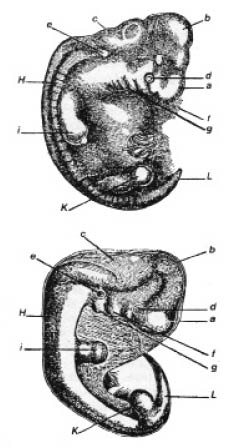
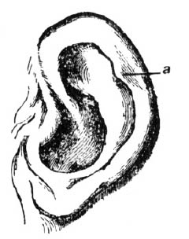
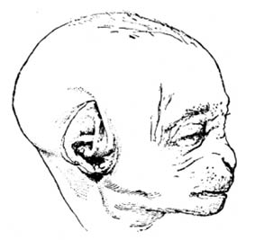

Birinci Bölüm
İNSANIN AŞAĞI BİR BİÇİMDEN TÜREDİĞİNİN KANITI
İnsanın kökeni ile ilgili kanıtlamanın niteliği • İnsanda ve aşağı hayvanlarda kökendeş (homologous)2* yapılar • Çeşitli uygunluk noktaları • Gelişim • Güdük (rudimentary) yapılar, kaslar, duyu organları, kıllar, kemikler, üreme organları, vb. • Bu üç büyük olgu kümesinin insanın kökeni ile ilgisi.
İnsanın daha önce yaşamış bir biçimin (form) değişiklik geçirmiş dölü olup olmadığına karar vermek isteyen kimse, belki de insanın vücut yapısı ve zihinsel yetileri bakımından az da olsa değişip değişmediğini; değişiyorsa, değişimlerin (variation) onun döllerine de aşağı hayvanlar için geçerli olan yasalara göre iletilip iletilmediğini araştırırdı. Bundan başka, bilgimizin elverdiği oranda, bu değişimlerin aynı genel nedenlerin sonucu olup olmadığını ve öbür organizmalarda olduğu gibi, aynı genel yasalara, örneğin karşılıklı-ilişkiye (correlation), kullanmanın ve kullanmamanın kalıtsal etkilerine, vb. bağlı olup olmadığını soruştururdu. İnsan, aksamış gelişimin, parçaların ikizlenmesinin (reduplication) vb. sonucu olarak, benzer kötü biçimlenmelere uğrar mı, ve herhangi bir sapkınlığı (anomaly) bakımından, gelip geçmiş eski bir yapılış tipine dönüş gösterir mi? İnsanın, öbür hayvanların birçoğu gibi, az da olsa birbirinden farklı çeşitler ve alt-ırklar, ya da kuşkulu türler olarak sınıflanmalarını gerektirecek kadar farklı ırklar verip vermediğini de elbette araştırabilirdi. Böyle ırklar yeryüzünde nasıl yayılmıştır; ve çaprazlanınca, ilk ve onu izleyen kuşaklarda birbirlerini nasıl etkilemektedir? Ve başka birçok nokta üzerinde böyle durmak gerekirdi.
Araştırmacı, daha sonra, şu önemli noktaya vardı: İnsan, arada bir o pek çetin varolma savaşına yol açacak kadar hızlı çoğalmaya eğilimli midir? Ve bunun sonucu olarak, bedensel ve zihinsel olsun, yararlı değişimler (variation) saklanmakta ve zararlı olanlar ayıklanmakta mıdır? İnsan ırkları ya da türleri (hangi terim kullanılırsa kullanılsın), birbirlerine gizliden gizliye sataşır, birbirlerinin yerine geçer, ve bundan ötürü, sonunda bazıları tükenir mi? Bütün bu soruların, tıpkı aşağı hayvanlarda olduğu gibi, olumlu yanıtlandırılması gerektiğini göreceğiz. Ama belirtilen noktalar bir süre için rahatça ertelenebilir: Önce, insanın vücut yapısının, onun daha aşağı bir biçimden türemesinin izlerini epey açıkça ve hangi ölçüde taşıdığını görelim. İlerideki bölümlerde, insanın zihinsel yetileri, aşağı hayvanlarınkilerle karşılaştırılarak ele alınacaktır.
İNSANIN VÜCUT YAPISI
Öbür memeliler gibi, insanın da aynı genel tipe ya da örneğe (modele) uygun yapılışta olduğu besbellidir. İnsan iskeletinin bütün kemikleri, maymun, yarasa, ya da fok iskeletindeki uygun kemiklerle karşılaştırılabilir. Bu, insanın kasları, sinirleri, kan damarları ve iç organları için de böyledir. Bütün organların en önemlisi olan beyin bile, Huxley’in ve başka anatomicilerin gösterdiği gibi, aynı kurala uyar. Bunun karşıtına tanıklık eden Bischoff,3 insan beynindeki önemli bütün yarık ve kıvrımların, orangutan beyninde benzerleri olduğunu kabul etmekte, yalnız, insan ve orangutan beyinlerinin, gelişimlerinin hiçbir döneminde tümü ile uyuşmadıklarını, tam bir uyuşmanın da beklenemeyeceğini eklemektedir. Çünkü, öyle olsaydı, ikisinin zihinsel yetileri de aynı olmak gerekirdi. Vulpian,4 şöyle demektedir: “İnsan beyni ile yukarı maymunlarınki arasında gerçek pek az fark vardır. Bu konuda bir yanılgı söz konusu değildir. İnsan, beynin anatomik ıraları (character) bakımından, insan-biçimli (anthropomorphous) maymunlara, öbür memeliler şöyle dursun, kuyruklu maymunlardan ve makaklardan bile daha yakındır.” Burada, insan ile yukarı memeliler arasında, beyin yapısı ve vücudun öbür parçaları bakımından görülen uygunluğun ayrıntılarını vermek gereksizdir.
Bununla birlikte, yapı ile doğrudan doğruya ya da açıkça bağlantısı olmayan, ama bu uygunluğu ya da hısımlığı çok güzel gösteren birkaç nokta, belirtilmeye değer.
İnsan kuduz, çiçek, sakağı (ruam), frengi, kolera, vb.5 gibi belirli hastalıkları aşağı hayvanlardan kapmaya ve onlara bulaştırmaya doğuştan yeteneklidir. Bu olgu, onların kanlarının ve dokularının ince yapıları ve bileşimleri bakımından pek benzer olduğunu6, en iyi mikroskop altında, ya da en iyi kimyasal çözümleme (analysis) ile yapılan karşılaştırmalarından çok daha açıkça göstermektedir. Maymunlar, bulaşmayan aynı hastalıkların birçoğuna yakalanmaya, bizim gibi, doğuştan yeteneklidir. Cebus Azarae’yi kendi yurdunda ve uzun süre titizlikle gözleyen Rengger,7 bu maymunun, bilinen belirtilerle nezleye yakalandığını; ve sık sık nezle olmanın bu hayvanda vereme yol açtığını buldu. Bu maymunlarda inme (apoplexy), bağırsaklarında yangı, gözlerinde perde (cataract) de oluyordu. Yavruları, süt dişleri dökülürken, çok kez aşırı ateşten ölmekteydi. İlaçların bu hayvanlardaki etkisi, bizdekinin aynı idi. Maymun çeşitlerinin birçoğu çaydan, kahveden ve ispirtolu içkilerden pek hoşlanır. Tütün içmeyi de pek sevdiklerini kendi gözlerimle gördüm.8 Brehm, Kuzeydoğu Afrika yerlilerinin yabanıl babunları [(baboon) bir uzun-kuyruklu maymungil türü, Papio cynocephalus –ç.], sert bira ile dolu şişeler bırakıp sarhoş ederek yakaladıklarını bildirmektedir. Brehm, kafeste tuttuğu bazı babunları bu durumda görmüştür ve onların davranışları ve yüzlerini garip garip ekşitmeleri üzerine bir yığın gülünç şey anlatır: “Maymunlar, ertesi sabah çok huysuz ve keyifsizdiler; ağrıyan başlarını elleri arasına almışlardı ve pek acıklı bir durumları vardı. Bira ya da şarap verilince tiksinti ile başlarını çevirdiler, ama limon suyundan hoşlandılar.”9 Bir Amerika maymunu, bir Atales, konyakla sarhoş olduktan sonra, birçok kimseden daha akıllıca davranıp, bir daha konyağa el sürmemişti. Bu önemsiz olgular, tat sinirlerinin insanda ve maymunda ne kadar benzer olduğunu ve sinir sistemlerinin ne kadar benzer yolda etkilendiğini göstermektedir.
İnsana tebelleş olan dış asalakların (parasite) ve bazen öldürücü etkileri olan iç asalakların hepsi, öbür memelilere tebelleş olanlarla aynı cinsten ya da familyadandır, ve uyuz da aynı türdendir.10 İnsan, öbür memeliler, kuşlar ve hatta böcekler gibi,11 gebeliğe benzer normal süreçlerin yanısıra, olgunlaşmanın ve çeşitli hastalıkların da sürelerinin ay dönemlerini izlemesine yol açan aynı anlaşılmaz yasanın etkisinde kalmaktadır. Yaraları, aynı iyileşme süreci ile kapanır. Kol ve bacakların kesilmesinden sonra artakalan parçalar, insanda da, özellikle embriyonal dönemin başlarında, en aşağı hayvanlarda olduğu gibi, bazen biraz yenilenme (regeneration) yeteneği kazanır.12
En önemli iş olan üreme süreci, bütün memelilerde, erkekle buluşmadan başlayarak ta doğuma ve yavrunun beslenmesine dek baştan sona, göze çarpar ölçüde aynıdır.13 Maymunlar, doğdukları zaman, bizim bebeklerimiz gibi, kendilerine bakamayacak durumdadırlar; ve belirli cinslerde, yavru ile erginler arasındaki görünür fark, çocuklarımızla tam gelişmiş ana babaları arasındaki fark kadardır.14 Kimi yazarlar, çocuğun öbür hayvan yavrularından çok daha ileri bir yaşta erginliğe ulaşmasını önemli bir fark olarak ileri sürmektedirler. Oysa tropikal ülkelerde yaşayan insan ırkları göz önünde tutulursa, fark büyük değildir, çünkü orangutanın 10-15 yıldan önce erginleşmediğine inanılmaktadır.15 Erkek kişi, kadından, irilik, vücut kuvveti, kıllılık, vb. bakımlardan olduğu gibi, zekâca da, tıpkı memelilerin çoğunun iki eşeyinde (sex) olduğu gibi, farklıdır. Öyle ki, genel yapılışta, dokuların ince yapısında, kimyasal birleşimde ve yapıda, insan ile yukarı hayvanlar, özellikle insan-biçimli (anthropomorphous) maymunlar arasındaki uygunluk son derece büyüktür.
EMBRİYONAL GELİŞİM
İnsan, aşağı yukarı 1/5 mm çapında bir yumurtacıktan gelişir. Bu yumurtacık, öbür hayvanların yumurtacıklarından, hiçbir bakımdan farklı değildir. Embriyonun kendisi, çok erken bir dönemde, öbür omurgalı hayvanlarınkinden ayırt edilemez. Bu dönemde, boyundaki atardamarlar, sanki kanı yukarı omurgalılarda bulunmayan solungaçlara taşır gibi, yaya benzer dallanmalar gösterir. Bununla birlikte, boynun iki yanında, solungaçların eski konumunu gösteren yarıklar hâlâ vardır. [1. resme bakınız.] Biraz daha sonraki bir dönemde, kollar ve bacaklar gelişince, ünlü Von Baer’in belirttiği gibi, “özkertenkelegillerin (lizards) ve memelilerin ayakları, kuşların kanatları ve ayakları, insanın el ve ayakları gibi, aynı temel biçime göre belirir”. Prof Huxley, “Gelişimin ancak daha sonraki aşamalarında, insan embriyonu maymununkinden belirgin farklılıklar gösterir. O aşamalarda, maymun embriyonu, köpeğinkinden ancak insanınki kadar ayrılır. Bu son söylenen nokta şaşırtıcı görünmekle birlikte, doğru olduğu gözle görülebilir”16 demektedir.
Kimi okurlarım hiç embriyon resmi görmemiş olabilirler; onun için, doğrulukları söz götürmeyen iki yapıttan alınmış bir insan embriyonu ile gelişimin aşağı yukarı aynı erken aşamasında bulunan bir köpek embriyonunun resimlerini sunuyorum.17
[RESİM -1]

Yukarıdaki resim bir insan embriyonunu (Ecker’den) aşağıdaki ise bir köpek embriyonunu (Bischoff’dan) göstermektedir.
a. Ön-beyin, beyin yarıküreleri, vb.
b. Orta beyin, dördüz yumrukcuklar (corpara quadrigemina).
c. Art-beyin, beyincik, omurilik soğanı.
d. Göz.
e. Kulak.
f. Birinci visceral kıvrım.
g. İkinci visceral kıvrım.
h. Gelişme durumundaki omurga ve kaslar.
i. Ön bacaklar.
k. Art bacaklar.
l. Kuyruk ya da os coccyx.
Böylesine yetkili bilirkişilerin yukarıya aldığım demeçlerinden sonra, insan embriyonunun öbür memelilerinkine pek benzediğini gösteren birtakım alıntılar sunmam gereksiz olur. Bununla birlikte, şu eklenebilir: İnsanın ergini gibi, insan embriyonu da, yapının çeşitli noktalarında, aşağı biçimlere benzemektedir. Örneğin yürek, başlangıçta, çarpan basit bir kap biçimindedir; çıkartı (sidik ve dışkı) bir dışkılıktan (cloaca) boşaltılır; kuyruk kemiği (os coccyx), gelişimlerinin başlangıcında bulunan bacaklardan daha öteye, gerçek bir kuyruk gibi uzanır.18 Hava-soluyan (air breathing) omurgalıların embriyonlarında, Wolff oluşumları (copora Wolffiana) denen belirli bezler, ergin balıkların böbreklerine benzer ve onlar gibi çalışır.19 İnsanla aşağı hayvanlar arasında, daha sonraki bir embriyonal dönemde bile, şaşırtıcı benzerlikler gözlenmiştir. Bischoff, “insan dölütünde (foetus, cenin), beynin kıvrımları, yedinci ayın sonunda ergin babun’un (Papio cynocephalus) beynindekine yakın bir gelişim aşamasına ulaşır”20 demektedir. Prof. Owen’ın dediği gibi,21 “yürürken ve dururken başlıca dayanak olan” ayak başparmağı, “insanın yapılışında göze en çok çarpan özelliklerden biridir”. Ama Prof. Wyman,22 aşağı yukarı 2.5 cm uzunluğundaki bir embriyonda, ayak başparmağının öbür ayak parmaklarından daha kısa olduğunu; ve onlara paralel olacak yerde, ayağın yanından bir açı yaparak çıktığını, ve böylece, o parçanın dört-ellilerde (quadrumana) bugün görülen durumuna uyduğunu buldu. İnsanın, köpekten, kuştan, kurbağadan ya da balıktan farklı bir yoldan mı türediğini sorduktan sonra Huxley’in verdiği şu yanıtla bu konuyu kapıyorum:
“Hiç kuşkusuz, insanın türeyişi ve gelişiminin ilk basamakları, onun hemen aşağısında bulunan hayvanlarınkilerle özdeştir; insanın bu bakımdan maymunlara, maymunların köpeklere olduğundan daha yakın olduğu söz götürmez.”23
GÜDÜKLÜKLER (RUDİMENTS)
Bu konu, son iki konudan daha az önemli olmakla birlikte, burada, çeşitli gerekçelerle daha eksiksiz işlenecektir.24 Herhangi bir parçası güdük olmayan bir tek yukarı hayvan gösterilemez, insan bu kuralın dışında kalmaz. Güdük organlar, oluşmaktaki organlardan ayırt edilmelidir; ne var ki, bazı durumlarda ayırım kolay değildir. Birinciler, erkek dört-ayaklıların (quadruped) memeleri, ya da gevişgetirenlerin diş etlerini hiçbir zaman yarıp çıkmayan kesici dişleri gibi, kesinlikle yararsızdır; ya da bulundukları canlının öylesine az işine yaramaktadırlar ki, onların bugün varolan koşullarda geliştiği düşünülemez. Bu son durumdaki organlar, tam anlamı ile güdükleşmiş değildir, ama eğilimleri o yöndedir. Öte yandan, oluşmaktaki organlar, tam gelişmemiş olmakla birlikte, canlıların büyük ölçüde işine yaramaktadır ve daha da gelişmeye yeteneklidir. Güdük organlar pek değişkendir; yararsız, ya da hemen hemen yararsız oldukları için ve bunun sonucu olarak artık doğal seçmeye (natural selection) uğramadıkları için, bu, bir bakıma anlaşılabilirdir. Böyle organlar, çoğu zaman, tümü ile bastırılmış olur. Ama böyle olsa bile, arada bir, ataya dönüş (reversion) yolu ile yeniden ortaya çıkmaya yeteneklidirler. Bu, dikkate değer bir olgudur.
Öyle görünüyor ki, organların güdükleşmesine yol açan baş etken, onların özellikle kullanıldıkları yaşam döneminde (ki bu, genellikle erginlik çağıdır) kullanılmamaları, ve uygun yaşam döneminde soyaçekimdir. “Kullanılmama” terimi yalnızca kasların daha az çalışması ile ilişkili değildir; az da olsa basınç değişikliklerine uğrama ya da alışkanlıkla ve her nasılsa daha az etkin duruma gelme yüzünden bir parça ya da organa daha az kan gitmesini de içermektedir. Bununla birlikte, eşeylerin birinde, öbür eşeyde normal olarak bulunan parçalarda çoğu zaman burada belirtilenlerden başka bir yolda belirdiklerini ileride göstereceğimiz güdüklükler olabilir. Bazı durumlarda, organlar, değişmiş yaşama alışkanlıklarında türe zararlı oldukları için, doğal seçme ile küçültülmektedir. Küçültme süreci, belki çoğu zaman büyümenin dengelenmesi ve ekonomisi ilkeleri ile de desteklenmektedir. Ama kullanılmama, açıkça kendisine yorulabilen her şeyi yaptıktan sonra, ve büyüme ekonomisi ile sağlanan biriktirim çok az olduğu zaman,25 küçültmenin daha sonraki aşamalarını anlamak güçtür. Yararsız ve çok küçülmüş bir parçanın tümü ile ve kesinlikle engellenmesi –ki burada büyümenin ekonomisinin de, dengelenmesinin de rolü olamaz– belki Pangenesis Varsayımı’nın* yardımı ile anlaşılır. Ama güdük organlar konusu bundan önceki yapıtlarımda tartışılıp anlatıldığı için,26 burada ayrıntılara girmem gereksizdir.
Güdük kaslar, insan vücudunun çeşitli kesimlerinde görülmektedir;27 aşağı hayvanların bazılarında bulunup da, arada bir insanda da büyük ölçüde küçülmüş olarak görülebilen kaslar hiç de az değildir. Hayvanların birçoğunda, özellikle atlarda, derilerini kıpırdatma ve seğirtme yetisi olduğu herkesin gözüne çarpmış olmalıdır. Bu, panniculus carnosus ile sağlanır. Bu kasın iş görür durumdaki kalıntıları, vücudumuzun çeşitli parçalarında bulunmaktadır; örneğin, kaşların kaldırılmasını sağlayan alın kası bu kalıntılardan biridir. Boyunda iyi gelişmiş olan platysma myoiedes de bu sistemdendir. Edinburghlu Prof. Turner, bana bildirdiğine göre, arada bir beş ayrı yerde, koltuk altlarında ve kürek kemiklerinin yakınlarında, vb., hepsi de panniculus sisteminden sayılmak gereken kas demetçikleri bulmuştur. Turner, rectus abdominalis’in bir uzantısı olmayan, ama panniculus ile yakınlığı olan musculus sternalis’in ya da sternalis brutorum’un 600’ü aşkın vücuttan %3’ünde bulunduğunu da göstermiştir.28 Ve bu kasın, “arada bir ortaya çıkan güdük yapılışların, bulundukları sistemde, değişime özellikle doğuştan yetenekli olduğunu çok güzel gösteren bir örnek” olduğunu eklemektedir.
Az sayıda da olsa, kafa derilerinin yüzeysel kaslarını kasma yetileri olan kimseler vardır. Bu kaslar, değişken ve kısmen güdük durumdadır. M.A. de Candolle, bana, bu yetinin uzun süre kalımlı ya da kalıtsal olduğunu ve olağanüstü gelişebildiğini gösteren bir örnek anlattı. Tanıdığı bir ailenin bugünkü başkanı, gençliğinde, başına konan ağır birkaç kitabı yalnızca kafa derisinin hareketi ile başından fırlatabiliyordu; ve bu işi yaparak, girdiği bahisleri kazanıyordu. Aynı yeti, babasında, amcasında, büyükbabasında ve üç çocuğunda da aynı olağanüstü ölçüde vardı. Bu aile, sekiz kuşak önce iki dala ayrılmıştı; böylece sözü geçen ailenin başkanı, öbür dalın başkanının yedinci göbekteki amcaoğlu oluyordu. Bu uzak amcaoğlu Fransa’nın başka bir kesiminde oturuyordu; kendisinde bu yetinin bulunup bulunmadığı sorulunca, yetisini gösteriverdi. Bu, kesinlikle yararsız ve belki çok uzak yarı-insan atalarımızdan gelen bir yetinin ne denli kalımlı olabildiğini gösteren iyi bir örnektir, çünkü maymunlarda, kafa derilerini aşağı yukarı büyük ölçüde hareket ettirme yetisi vardır ve bunu sık sık kullanmaktadırlar.29
Dış kulağı hareket ettirmeye yarayan dış kaslar ve çeşitli parçaları hareket ettiren iç kaslar, insanda güdük durumdadır ve hepsi panniculus sistemindendir; onlar da, gelişimlerinde ya da hiç değilse görevlerinde, değişkendir. Kulak kepçesini tümü ile öne çekebilen bir adam gördüm; kimileri kulaklarını yukarı, kimileri ise arkaya doğru çekebilir.30 Bu adamlardan birinin bana anlattığına göre, kulaklarımıza sık sık dokunup dikkatimizi kulaklarımıza çevirmekle, deneye deneye, pek çoğumuz bir yetiyi yeniden kazanabiliriz. Kulakları dikmenin ve çevredeki çeşitli noktalara çevirebilmenin birçok hayvanın pek yararına olduğu söz götürmez; çünkü böylelikle tehlikenin yönü anlaşılmaktadır. Ama bu yetinin, herhangi bir kimsede, onun işine yarayabilecek ölçüde bulunduğunu hiç işitmedim ve işe yarar kanıtlara rastlamadım. Bütün kulak kepçesi, aşağı hayvanlarda dikildiği zaman kulağı sertleştiren ve bu işi onun ağırlığını artırmadan yapan çeşitli kıvrımları ve kabartıları (helix ve anti-helix, tragus ve anti-tragus, vb.) ile birlikte, güdük sayılabilir. Bununla birlikte, kimi yazarlar, kulak kepçesi kıkırdağının, titreşimleri ses sinirine iletmeye yaradığını sanmaktadırlar; oysa Toynbee,31 bu konuda bilinen bütün kanıtları topladıktan sonra, kulak kepçesinin özel bir yararı olmadığı sonucuna varmıştır. Şempanzenin ve orangutanın kulakları insanınkilere pek benzer, kulağa özgü kaslar da insandaki gibidir, yalnız çok az gelişmiştir.32 Hayvanat bahçesindeki bakıcılar, bana, bu hayvanların kulaklarını hiç dikmediklerini ve kımıldatmadıklarını kesinlikle söylediler. Demek ki, görev yapmaları söz konusu ise, onların kulakları da insanınkiler kadar güdük durumdadır. Bu hayvanların ve insanın atalarının, kulaklarını dikme yetisini neden yitirmeleri gerektiğini söyleyemeyiz. Belki, ağaçlarda yaşama alışkanlıklarından ve çok kuvvetli olmalarından ötürü, pek az tehlike ile karşılaştıkları için kulaklarını pek uzun bir zaman az hareket ettirmiş ve böylece, kulaklarını hareket ettirme yetisini yavaş yavaş yitirmişlerdir. Ancak, bu açıklamayı yeterli bulmuyorum. Bu, okyanus adalarını yurtlanan iri ve ağır kuşların, yırtıcı hayvanların saldırılarına uğramamaları dolayısıyla, kanatlarını uçmak için kullanma yetisini yitirmelerine benzer bir örnek olurdu, insanın ve çeşitli maymunların kulaklarını hareket ettirememeleri, başlarını yatay bir düzlemde, her yönden gelen sesleri alabilecek şekilde hareket ettirebilmeleri ile karşılanır. Yalnız insan kulağında “meme” olduğu ileri sürülmüştür; ama “kulak memesinin güdüğü gorilde de bulunur”;33 ve, Prof. Preyer’den işittiğime göre, zencilerde kulak memesinin bulunmaması, hiç de seyrek rastlanan bir olgu değildir.
[RESİM -2]

Bay Woolner’in modele bakarak çizdiği insan kulağı, a. Öne doğru çıkıntı yapan nokta.
Ünlü heykeltıraş Woolner, dışkulakta, erkeklerde de kadınlarda da sık sık gözlediği ve önemini gereği gibi kavradığı küçük bir özelliği bana bildirdi. Dikkati, ilk kez Puck (peri) heykeli üzerinde çalışırken bu noktaya çekilmişti; çünkü periyi sivri kulaklı yapıyordu. Bu, çeşitli maymun kulaklarını ve insan kulağını daha dikkatli incelemesine yol açtı. Söz konusu özellik, içeri doğru kıvrılmış kenarda, ya da helix’te bulunan küçük ve küt bir çıkıntıdır. Bu çıkıntı varsa, daha doğumda gelişmiş olmakta, ve Prof. Ludwig Meyer’e göre, erkekte kadında olduğundan daha sık görülmektedir. Bay Woolner böyle bir kulağın örneğini çıkardı, ve resmini çizip bana gönderdi (resim 2). Bu noktalar yalnız içeri ve kulağın ortasına doğru değil, sık sık kulak düzleminden dışarı doğru da çıkıntı yapmakta, öyle ki, başa tam önden ya da arkadan bakılınca görülmektedir. Bu çıkıntılar büyüklük bakımından, ve biraz da konum bakımından değişkendirler, ya biraz daha aşağıda, ya da biraz daha yukarıda bulunmaktadırlar. Bazen yalnız bir kulakta bulunmakta ve öbüründe bulunmamaktadırlar. Yalnız insan soyuna özgü de değildirler; çünkü hayvanat bahçelerimizdeki maymunların birinde (Ateles beelzebuht) bir örneğini gözledim; ve Bay E. Ray Lankester, Hamburg hayvanat bahçesindeki bir şempanzede bu çıkıntıyı gördüğünü bana bildirdi. Helix’in, kulak dış kenarının içeri kıvrılması ile oluştuğu besbellidir; ve bu kıvrım, dış kulağın sürekli olarak arkaya doğru bastırılması ile herhangi bir yolda bağlantılı görünüyor. Babunlar ve bazı makak türleri gibi, takımlarının yukarı familyalarından olmayan maymunların birçoğunda,34 kulağın üst kesimi hafifçe sivridir, ve kulak kenarı içeri doğru hiç katlanmamıştır; ama kulak kenarı katlanmış olsa idi, küçük bir nokta, içeri, merkeze doğru ve belki kulak düzleminden biraz dışarı doğru çıkıntı yapardı. Bence bu, birçok durumda, söz konusu çıkıntının kökenidir. Öte yandan, Prof. L. Meyer, bu yakınlarda yayınlanmış bir yazısında,35 bütün bu durumun yalnızca bir değişkenlik olduğunu; çıkıntıların gerçek olmayıp, o noktaların her yanında iç kıkırdağın tam gelişmemesinden doğduğunu ileri sürmektedir. Prof. Meyer’in gösterdiği o birden çok küçük çıkıntı bulunan, ya da bütün kulak kenarının girintili çıkıntılı olduğu örneklerin birçoğunda, doğru açıklamanın bu olduğunu kabul etmeye hazırım. Dr. L. Down’ın aracılığı ile, ufak kafalı bir doğuştan aptalın (microrephalus idiot) kulaklarını gördüm: Helix’in içeriye doğru kıvrılmış kenarında değil de, dış yüzünde bir çıkıntı vardı; bundan ötürü, o noktanın eski kulak ucu ile ilişkisi olamazdı. Bununla birlikte, bu çıkıntıların eskiden dik ve sivri olan kulakların kalıntıları olduğu görüşümün bazı durumlarda doğru olabileceği kanısındayım. Bu çıkıntılar sık sık ortaya çıktığı için, ve konumları ile sivri bir kulağın ucu arasında genel bir uygunluk bulunduğu için böyle düşünüyorum. Bana fotoğrafı gönderilen bir örnekte çıkıntı öylesine büyüktü ki, Prof. Meyer’in görüşüne göre kulağın bütün kulak kenarı boyunca kıkırdağın eşit gelişimi ile kusursuz oluştuğu varsayılırsa bütün kulağın üçte birini kaplaması gerekirdi. Bana Kuzey Amerika’dan ve İngiltere’den iletilen iki örnekte, üst kenar içeriye doğru hiç kıvrılmamıştı; tersine, sivrilmişti, öyle ki ana çizgileri bakımından bayağı bir dört-ayaklının (quadruped) sivrilmiş kulağına çok benziyordu. Başka bir örnekte, küçük bir çocukta, çocuğun babası verdiğim36 bir maymun (Cynopithecus niger)
[RESİM -3]

Bir orangutan dölütü (fetus, cenin). Kulağın erken çağdaki biçimini gösteren bir fotoğrafının tam kopyasıdır.
kulağı resmini çocuğunun kulağı ile karşılaştırdı, ana çizgilerin çok benzediğini söyledi. Bu iki örnekte, kulak kenarı normal olarak içeriye doğru kıvrılsaydı, içeriye doğru bir çıkıntı belirmeliydi. Başka iki örnekte, kulağın üst kesiminin kenarı normal olarak içeriye doğru –ama örneklerin birinde çok dar– kıvrılmış olmakla birlikte, kulak ana çizgileri bakımından gene biraz sivri kalmıştı. Resim 3, bir orangutan dölütü (foetus, cenin) fotoğrafının tam bir kopyasıdır. Bana Dr. Nitsche’nin gönderdiği bu resimde, sivrilmiş kulak taslağının, o dönemde, insanınki ile büyük bir genel benzerliği olan tam gelişmiş durumundan ne kadar farklı olduğu görülebilmektedir. Böyle bir kulak ucunun içeriye doğru kıvrılması ile kulak daha sonraki gelişimi boyunca büyük ölçüde değişmezse, içeriye doğru bir çıkıntı belireceği bellidir. Genellikle, bana öyle geliyor ki, söz konusu çıkıntılar, insanda da maymunlarda da, eski bir durumun kalıntıları olabilir.
Niktitant zar, ya da üçüncü gözkapağı, yardımcı kasları ve öbür yapıları ile birlikte, özellikle kuşlarda çok iyi gelişmiştir, ve bütün göz yuvarlağı boyunca hızla çekilebildiği için, kuşlardaki görevsel önemi büyüktür. Bazı sürüngenlerde ve iki-yaşayışlılarda (amphibia), belirli balıklarda, örneğin Carcharhinus lamia’da da [köpek balıkları takımının Carchariidae familyasından bir balık türü –ç.] bulunur. Memelilerin aşağı bölümlerinde, tekdeliklilerde (monotremata) ve keselilerde (marsupialia), ve pasifik morsu (Odobenus obesus) gibi yukarı memelilerin birkaçında, oldukça iyi gelişmiştir. Oysa insanda, dört-ellilerde (quadrumana), ve öbür memelilerin pek çoğunda, bütün anatomicilerin kabul ettiği gibi, ancak yarımay biçimli kıvrım (semilunar fold) denen güdük bir kat olarak vardır.37
Koklama duyusu, memelilerin çoğu için pek önemlidir: bazılarının, örneğin geviş getirenlerin, tehlikeyi sezmelerine; bazılarının, örneğin etçillerin (carnivora), avlarını bulmalarına yarar; ve bazılarında, yaban domuzunda olduğu gibi, her iki amaç için de yararlıdır. Oysa koklama duyusu, insanda, uygar ve ak ırklardakine oranla çok daha gelişmiş olduğu koyu renkli ırklarda bile, pek az işe yarar.38 Ama onlara tehlikeyi bildirmez, besinlerini bulmalarına da yardım etmez; Eskimoların en iğrenç kokulu yerlerde uyumalarına engel olmadığı gibi, yabanıl insanların birçoğunun yarı-çürümüş et yemelerini de önlemez. Koklama duyusu pek çok gelişmiş seçkin bir doğa bilgininin bana kesinlikle söylediği gibi, bu duyu, Avrupalı farklı bireylerde büyük ölçüde farklıdır. Aşamalı evrim ilkesine inananlar, bugünkü insanın, koklama duyusunu, aslında, şimdiki durumu ile kazandığını isteyerek kabul etmeyeceklerdir. Bu yeti, insana, onu sürekli olarak kullanmış ve ondan çok yararlanmış eski bir atadan, zayıflamış ve şimdiki kadar gelişmemiş bir durumda kalmıştır. Bu duyunun çok gelişmiş olduğu hayvanlarda, örneğin köpeklerde ve atlarda, kişilerin ve yerlerin anımsanması, onların kokuları ile sıkı sıkıya ilgilidir; ve belki, Dr. Muadsley’in de çok yerinde söylediği gibi,39 koklama duyusunun, insanda, “unutulmuş olaylar ve yerler ile bağlantılı düşünceleri ve görüntüleri apaçık anımsamada olağanüstü işe yarar” olmasını böylece anlayabiliriz.
İnsan, hemen hemen çıplak oluşu ile, öbür maymunların (primates) hepsinden apaçık ayrılır. Ama erkekte, vücudun büyük bir kesiminde, dağınık kısa kıl kümeleri bulunur. Kadında ise, ince tüyler vardır. Çeşitli ırklar kıllılık bakımından çok farklıdır; ve kıllar, aynı ırkın bireylerinde, yalnız çokluk bakımından değil, yerleri bakımından da pek değişkendir: Kimi Avrupalıların omuzları hiç kılsızdır, oysa kimilerinde sık kıl kümeleri vardır.40 Vücutta böyle dağılmış olarak bulunan kılların, aşağı hayvanların düzgün kıl kürkünün izleri olduğundan pek az kuşku duyulabilir. Kollarda, bacaklarda ve vücudun öbür kesimlerinde bulunan ince, kısa, ve açık renkli kılların, bazen, çok eskiden yangılanmış yüzeylerin yakınında anormal beslendikleri zaman, “sık, uzun ve oldukça kaba koyu renkli kıllar”a dönüşmesi, bu görüşü desteklemektedir.41
Sir James Paget, bana, bir ailenin başka başka bireylerinin kaşlarında, öbür kıllardan çok daha uzun birkaç kıl bulunduğunu bildirdi; demek ki bu önemsiz özellik bile kalıtsal olabilir. Öyle görünüyor ki, bu kılların bile temsilcileri vardır; çünkü şempanzede ve belirli makak türlerinde, gözlerin yukarısındaki çıplak deriden çıkmış ve bizim kaşlarımıza karşılık olan epey uzun ve dağınık kıllar vardır; bunlara benzer kıllar, bazı babunların kaş kılları arasında da bulunur.
İnsan dölütü, altıncı ayında, lanugo denen ince, yünümsü kıllarla kaplıdır ve bu, daha da ilgi çekici bir durumdur. Lanugo, önce, beşinci ayda kaş yerlerinde ve yüzde, özellikle ağız çevresinde gelişir ve burada, başta olduğundan çok daha uzundur. Eschricht, dişi bir dölütte böyle bir bıyık gözlemiştir.42 Ama bu, ilk bakışta göründüğü kadar şaşırtıcı bir durum değildir, çünkü iki eşey (sex), gelişimin ilk döneminde, belirli bir evrede, bütün dış ıraları bakımından birbirine benzer. Dölüt vücudunun bütün parçalarındaki kılların yönleri ve dağılımı, ergindeki gibidir; yalnız, değişkenliğin daha çok etkisine uğramaktadır. Bütün deri, alında ve kulaklarda bile, sık kıllarla örtülüdür; ama el ayaları ve ayak tabanları, aşağı hayvanlardaki gibi, tümü ile çıplaktır; ve bu, anlamlı bir olgudur. Bu, rastgele bir uygunluk olamayacağına göre, dölütün yünsü örtüsü, kıllı doğan memelilerdeki kalımlı kürkü temsil ediyor olabilir. Bütün vücutları ince, uzun kıllarla çok sık kaplı olarak doğmuş çocuklarla ilgili üç ya da dört belge vardır. Bu garip durum, pek kalıtsaldır ve dişlerin anormal durumu ile karşılıklı-ilişkilidir.43 Prof. Alex. Brandt, bana, böyle doğmuş ve otuz beş yaşına varmış bir adamın yüzündeki kılları bir dölütün lanugosu ile karşılaştırdığını, oluşumları bakımından pek benzer olduklarını gördüğünü bildirdi; bundan dolayı, Prof. Brandt, bu olguyu, dölütün gelişimi ilerlerken, kılların gelişiminin engellenmesine yormaktadır. Çocuk hastanesinde görevli bir hekim, cılız çocukların birçoğunda, sırtın ipeğimsi ve oldukça uzun kıllarla kaplı olduğunu bildirmişti. Böyle örnekler de aynı konuya giriyor olabilir.
Art azı (posterior molar) ya da yirmi yaş dişleri, çok uygarlaşmış insan ırklarında, güdükleşmeye eğilimli gibi görünmektedir. Bu dişler, öbür azılardan epey küçüktür. Bu, şempanzede ve orangutanda da böyledir. Yirmi yaş dişlerinin iki ayrı kökü vardır. Bu dişler, aşağı yukarı on yedi yaşına dek, diş etlerini yarıp çıkmazlar; bana söylendiğine göre, öbür dişlerden daha önce çürüyebilir ve yitirilebilirler; ancak, tanınmış kimi dişçiler, bunun doğru olmadığını söylemektedirler. Yirmi yaş dişleri, yapılışları ve gelişim dönemleri bakımından da, öbür dişlerden daha çok değişebilir.44 Öte yandan, Malezya ırklarında, yirmi yaş dişleri genellikle sağlamdır ve üçer köklüdür; büyüklükleri de, Kafkas ırklarındakine oranla, öbür azılardan daha az farklıdır.45 Prof. Schauffhausen, ırklar arasındaki bu farkı, “çenenin yirmi yaş dişlerini taşıyan kesiminin”, uygar ırklarda “hep kısalmış” olması ile açıklamaktadır.46 Bence, bu kısalma, uygar insanların yumuşak ve pişirilmiş yiyeceklerle beslenme alışkanlıklarının sonucu olarak, çenelerini daha az kullanmalarına yorulabilir. Bay Brace, çeneleri normal sayıda dişin eksiksiz gelişimine yeter büyüklüğü kazanamadığı için ABD’de, çocukların bazı azı dişlerini çekmenin pek genel bir uygulama durumuna gelmekte olduğunu bildirdi.47
Sindirim borusuna gelince; orada bir tek güdüklüğe rastladım: Körbağırsağın solucan biçimindeki çıkıntısı (apandis). Körbağırsak sonu, kapalı bir bağırsak dalı ya da yan dolantısıdır (diverticulum), ve otçul aşağı memelilerin birçoğunda son derece uzundur. Keseli ayıda (marsupial koala, Phascolartus cinereus), bütün vücut boyunun üç katından daha uzundur.48 Bazen, gittikçe daralan bir çıkıntının içine doğru uzatılmıştır, ve bazen, boğumlanarak parçalara ayrılır. Körbağırsak değişmiş beslenişin ya da alışkanlıkların sonucu olarak çeşitli hayvanlarda pek kısalmış ve solucan biçimindeki apandis, kısalan kesimin bir güdüklüğü olarak artakalmış gibi görünmektedir. Apandisin bir güdüklük olduğunu, onun küçüklüğünden ve insandaki değişkenliği konusunda Prof. Canestri’nin topladığı kanıtlardan çıkarabiliyoruz.49 Bazen ya hiç yoktur, ya da yeniden çok gelişmiş olarak bulunur. İç boşluğu, bazen, boyunun üçte ikisine dek tümü ile kapanmıştır, ve uç kesimi yassılmış som bir genişleme göstermektedir. Apandis, orangutanda uzundur ve büklüm büklümdür. İnsanda, kısa körbağırsağın ucundan çıkar ve genellikle 10-12 cm uzunlukta ve aşağı yukarı ancak 0,8 cm çapındadır. Yalnız yararsız olmakla da kalmaz, bazen bir ölüm nedenidir. Bunun iki örneğini yakınlarda işittim: Bu, çekirdek vb. gibi sert cisimlerin apandisin içine girip yangılanmaya yol açmasından ileri gelmektedir.50
Bazı aşağı dört-ellilerde (quadrumana), makigillerde (Lemuridae) ve etçillerde (Carnivora) olduğu gibi, keselilerin (Marsupalia) birçoğunda da, pazı kemiğinin alt ucunun yakınlarında, supra-condyloid foramen denen küçük bir delik vardır. Bu delikten, ön kol (ön bacak) büyük siniri ve çoğu zaman da büyük atardamar geçer. İnsanın pazı kemiğinde de, genellikle, bu geçidin bir izi, bazen epey iyi gelişmiş olarak bulunmaktadır. Bu kemiğin çengele benzer bir çıkıntısından oluşmuş ve bir bağ (ligament) şeridi ile bütünlenmiştir. Bu nesne ile yakından ilgilenen Dr. Strithhers,51 bu özelliğin kalıtsal olduğunu gösterdi. Söz konusu delik, bir babanın yedi çocuğundan dördünde vardı. Bu delik varsa, büyük sinir hep onun içinden geçmektedir. Bu, onun aşağı hayvanlardaki supra-condyloid foramen’in kökendeşi (homologue) ve güdüğü olduğunu gösterir. Prof. Turner, bana bildirdiğine göre, bu geçidin, bugünkü iskeletlerin aşağı yukarı yüzde birinde bulunduğu kanısındadır. Bu yapılışın insanda arada bir gelişmesi, göründüğü gibi, bir ataya-dönüş ise çok eski bir duruma dönüştür, çünkü yukarı dört-ellilerde (quadrumana) görülmemektedir.
Pazı kemiğinde, arada bir insanda da bulunan, inter-condyloid foramen denebilecek başka bir küçük delik ya da delinme daha vardır. Bu, her zaman değilse bile, çeşitli insansılarda (anthropoid),52 gerçek maymunlarda ve aşağı hayvanların birçoğunda da bulunmaktadır. Bu delinmenin, insanda, eski çağlarda, yakın çağlarda olduğundan daha sık görülmesi dikkate değer. Bay Busk,53 bununla ilgili olarak aşağıdaki kanıtları toplamıştır: Prof. Broca, “Paris’teki ‘Cimetiére de Sud’de (Güney Mezarlığı’nda) topladığı kol kemiklerinin yüzde dört buçuğunda bu deliği gördü; ve buluntuların Tunç Döneminden kalma olduğuna inanılan Orrony Mağarasında, otuz iki pazı kemiğinin sekizi delikti; ama bu olağanüstü oranın, adı geçen mağaranın bir çeşit aile mezarlığı olmasından ileri gelebileceğini sanmaktadır. Dupont, Lesse Koyağı mağaralarında Ren Geyiği Döneminden (Reindeer period) kalma kemiklerin yüzde otuzunun delikli olduğunu buldu; Leguay ise, Argenteuildeki bir çeşit dolmen’de, pazı kemiklerinin yüzde yirmi beşinin delik olduğunu gözledi; ve Pruner-Bey, Vauréaldeki kemiklerin yüzde yirmi altısının delikli olduğunu saptadı. Pruner-Bey’in bunun Guanche iskeletlerinde genellikle görülen bir durum olduğunu bildirdiğini de söylemeden geçmeyelim.” Bunda ve başka birkaç örnekte, eski ırkların, aşağı hayvanlarınkilere benzer yapılışları çağdaş ırklardan daha sık göstermeleri, ilginç bir olgudur. Öyle görünüyor ki, bunun başlıca nedenlerinden biri, eski ırkların, uzun soy çizgisinde, hayvana-benzer uzak atalarına biraz daha yakın kalmalarıdır.
Kuyruk kemiği (os coccyx) ileride söz konusu edilecek belirli omurlarla birlikte, insanda, kuyruk olarak görevsizdir; bununla birlikte, öbür omurgalı hayvanlardaki bu parçayı açıkça temsil etmektedir. Erken bir embriyonal dönemde, kuyruk kemiği bağımsızdır, ve aşağı uçlardan (ayaklardan) daha öteye uzanır (resim: 1). Belirli seyrek ve anormal olgularda, doğumdan sonra bile, küçük, güdük ve görülür bir kuyruk oluşturduğu bilinmektedir.54 Kuyruk kemiği kısadır; çoğu zaman, hepsi birbiri ile kaynaşmış dört omurdan yapılmıştır; ve bu omurlar güdük durumdadır; çünkü dipteki omur dışında, hepsi yalnızca omur gövdesinden (centrum) oluşmuştur.55 Bütün bu omurlar, küçük birkaç kasla donatılmıştır. Prof. Turner’in bana bildirdiğine göre, bunlardan biri, Theile’nin kesinlikle belirttiği gibi, memelilerin birçoğunda büyük ölçüde gelişmiş olan kuyruk gerici kasın güdük bir temsilcisidir.
Omurilik, insanda, aşağıya doğru ancak son sırt ya da ilk bel omuruna dek uzanır; ama ipliğimsi bir yapılış (filum terminale), omurga kanalının kuyruk sokumu kesimindeki ekseninden aşağı, ve kuyruk kemiklerinin sırtı boyunca bile uzanır. Prof. Turner’in bana bildirdiğine göre, bu ipliğin yukarı kesiminin omirilik ile kökendeş (homologous) olduğu söz götürmez; ama alt kesiminin yalnız ince zardan (Pia mater), ya da omuriliği saran damarlı zardan yapıldığı bellidir. Bu olguda bile, kuyruk kemiğinin (os coccyx), artık bir kemik kanalı içinde olmasa da, omurilik gibi pek önemli bir yapılışın izini taşıdığı söylenebilir. Gene Prof. Turner’e borçlu olduğum aşağıdaki olgu, kuyruk kemiğinin daha aşağı hayvanlardaki gerçek kuyruğa ne kadar çok benzediğini göstermektedir: Luschka, bu yakınlarda, kuyruk kemiklerinin bitiminde, çok özel biçimde bükülmüş bir cisim bulmuştur. Bu, orta sacral (kuyruk sokumu kemiğine ilişkin) atardamarla birlikte uzanmaktadır; ve bu buluş, Krause’ın ve Meyer’in maymun ve kedi kuyruğunu incelemelerine yol açmıştır. Bu araştırmacılar, her iki kuyrukta da kuyruk kemiklerinin bitiminde olmamakla birlikte, buna benzer bükülmüş birer cisim bulmuşlardır.
Üreme sistemi çeşitli güdük yapılışlar gösterir; ama önemli bir bakımdan, verilen örneklerden ayrılır. Burada, bir türde iş görür durumda olmayan bir parçanın güdüklüğü ile değil eşeylerin (sex) birinde iş görür durumda bulunup da, öbür eşeyde ancak güdük olarak temsil edilen bir parça ile ilgileneceğiz. Böyle güdüklüklerin ortaya çıkışını, her türün bağımsız yaratıldığı inancı ile açıklamak, bundan önceki örneklerdeki kadar güçtür. İleride, bu güdüklükler üzerinde yeniden durmam gerekecek; ve onların varlığının genellikle yalnız soyaçekime, yani, bir eşeyde kazanılan parçaların kısmen öbür eşeye geçirilmesine bağlı olduğunu göstereceğim. Burada, yalnızca böyle güdüklüklere birkaç örnek vermek istiyorum. İnsanla birlikte bütün memelilerin erkeklerinde güdük memeler olduğunu herkes bilir. Bunlar, bazı durumlarda iyi gelişmiştir ve bol bol süt vermektedir. Kızamık sırasındaki uyumlu büyümeleri de, onların iki eşeydeki zorunlu özdeşliğini gösterir. Erkek memelilerin birçoğunda gözlenen prostat keseciğinin (vesicula prostatica), bağlantılı parçaları ile birlikte, dişideki dölyatağının (uterus, rahim) kökendeşi (homologue) olduğu bugün genellikle kabul edilmektedir. Leuckart’ın bu organ üzerine yazdıklarını ve çıkardığı sonuçları okuyup ona hak vermemek olanaksızdır. Bu, dişi dölyatağının çatallandığı memelilerde özellikle bellidir, çünkü bu torbacık (vesicula) erkeklerde de çatallanmaktadır.56 Burada, üreme sistemindeki güdük yapılışlara başka örnekler de verilebilirdi.57
Verilen bu üç büyük olgu kümesinin anlamı açıktır. Türlerin Kökeni adlı yapıtımda ayrıntılı olarak verilen kanıtları burada bir daha özetlemek gereksiz olurdu. Aynı sınıfın üyelerinde bütün vücudun kökendeş (homologous) yapılışı, onların ortak bir atadan geldiklerini, ve daha sonra, değişmiş koşullara uyarlandıklarını kabul edersek, kolayca anlaşılır. Bunun dışındaki herhangi bir görüşe göre insan ya da maymun eli ile at ayağı, fok yüzgeç-ayağı ve yarasa kanadı vb. arasındaki örnek (model) benzerliği anlaşılamaz.58 Bunların hepsinin aynı yetkin plana göre oluşturulduğunu söylemek, bilimsel bir açıklama değildir. Gelişime gelince, değişimin (variation) epey geç bir embriyonal dönemde olması, ve uygun bir dönemde soyaçekimle kazanılması ilkesini göz önünde bulundurarak, şaşılacak kadar farklı biçimleri olan embriyonlarda, ortak atalarının yapılışının epey yetkin olarak nasıl alıkonduğunu açıkça anlayabiliriz. İnsan, köpek, fok, yarasa, sürüngen, vb. embriyonlarının başlangıçta birbirinden ayırt edilememesi gibi şaşırtıcı bir olgu, bugüne dek başka türlü açıklanamamıştır. Güdük organların varlığını anlamak için, yalnızca söz konusu parçaların eski bir atada yetkin durumda bulunduğunu, değişmiş yaşama alışkanlıklarının etkisinde ya düpedüz kullanılmama, ya da gereksiz bir parça ile en az engellenmiş bireylerin doğal olarak seçilmesi yüzünden, ve daha önce belirtilmiş araçların da yardımı ile, büyük ölçüde küçüldüklerini varsaymalıyız.
Böylece, insanın ve bütün öbür omurgalı hayvanların neden aynı genel örneğe (modele) uygun yapılışta olduklarını, neden aynı ilk gelişim aşamalarından geçtiklerini, ve neden genellikle belirli güdüklükleri olduğunu anlayabiliriz. Sonuç olarak, onların soy ortaklığını açıkça kabul etmemiz gerekir. Başka bir görüşten yana olmak, kendi yapılışımızın, ve çevremizdeki bütün hayvanlarınkinin, sağduyumuza kurulmuş bir tuzaktan başka bir şey olmadığını kabul etmektir. Bütün hayvan serilerinin üyelerini göz önünde bulundurursak, onların ilgilerinden (affinity) ya da sınıflanmalarından çıkarılan kanıtları, coğrafi yayılmalarını ve yerbilimsel ardışmalarını düşünürsek, bu sonuç büyük ölçüde doğrulanır. Bu sonuç karşısında duraksamamıza yol açan, yalnızca bizim doğal önyargımız ile dedelerimize yarı-tanrıların soyundan geldiklerini söyleten büyüklenmedir (arrogance). Ama insanın ve öbür memelilerin kurallı yapılışını ve gelişimini çok iyi öğrenen doğa bilginlerinin, onların her birinin ayrı bir yaratma ürünü olduğuna inanmak zorunda olmalarının garip karşılanacağı zaman, yakında gelecektir.
2* Yunanca homologos = homos, aynı + logos, oran, ilişki. Yaşambilimde, ortak ilkel bir kökenleri olan, biçim ve kuruluşları bakımından birbirine uyan yapı ve organlara homologous denir. Örneğin, yarasanın ve kuşların kanatları, insanın kolları, kedinin ön bacakları homologous’tur. Homologous parçaların ve organların görevleri farklı olabilir. Bu terimi kökendeş diye çevirmeyi uygun bulduk ve herhangi bir yanlış anlamaya yol açmamak için kökendeş’ten sonra hep (homologous) dedik. –ç.n.
3 Grosshirnwindungen des Menschen, 1868, s. 96. Bu yazarın, aynı zamanda Gratiolet ile Aeby’nin insan beyni ile ilgili olarak vardığı sonuçlar, Prof. Huxley’in “Structure of the Brain” adlı yazısında tartışılmıştır.
4 Leç. sur la Phys., 1866, s. 890’dan M. Dally’nin aktardığı gibi: L’Ordre des Primates et le Transformisme, 1868, s. 29.
5 Dr. W. Lauder Lindsay, bu konuyu epey uzun işlemiştir: Journal of Mental Science, July 1871, ve Edinburgh Veterinary Review, July 1858.
6 Bir eleştirmen, burada söylediklerimi çok sert ve saldırgan bir biçimde eleştirdi (British Quarterly Review) Oct. 1871, s. 472; oysa ben özdeşlik terimini kullanmıyorum, ve büyük ölçüde yanıldığımı anlayamıyorum. Bana öyle geliyor ki, farklı iki hayvanda aynı, ya da pek benzer sonuçlara yol açan aynı bulaşıcı hastalık ile farklı iki sıvının aynı kimyasal ayıraçla sınanması arasında büyük bir benzerlik vardır.
7 Naturgeschichte der Säugethiere von Paraguay, 1830, s. 50.
8 Aynı düşkünlükler çok daha aşağı aşamalardaki bazı hayvanlarda görülür. Bay Nicols, bana, Avustralya’da, Queensland’da beslediği üç Phaseo-larctus cinereus’un hiç öğretilmeden, rom ve tütün içmeye alıştıklarını bildirmektedir.
9 Brehm, Thierleben, B. i, 1864, s. 75, 86. Atales konusunda, s. 105. Öbür benzer açıklamalar için, bkz: s. 25,107.
10 Dr. W. Lauder Lindsey, Edinburgh Vet. Review, July 1858, s. 13.
11 Böcekler konusunda bkz: Dr. Laycock, “On a General Law of Vital Periodicity”, British Association, 1842. Dr. Macculloch, günaşırı tutan sıtmaya (tertian ague) yakalanmış bir köpek görmüştür. Silliman’s North American Journal of Science, vol, xvii, s. 305. İleride bu konuya yeniden döneceğiz.
12 Bu konudaki kanıtları Variation of Animals and Plants under Domestication adlı yapıtımda verdim. Bkz: vol. ii, s. 15. Başka kanıtlar da verilebilirdi.
13 Dört-ellilerin farklı cinslerinin erkekleri, insanın dişisini ayırt eder. Kadını görünüşünden çok kokusundan tanıdıklarını sanıyorum. Hayvanat bahçesinde uzun süre veterinerlik yapmış titiz ve zeki bir gözlemci olan Bay Youatt, beni buna kesinlikle inandırdı; bakıcılar ve öbür görevliler de bunu doğruladılar. Sir Andrew Smith ve Brehm, köpekbaşlı maymunda (Cynocephalo) da bu nokta üzerinde durmuşlardır. Ünlü Cuvier de, bu konuda, insanlarla dört-elliler arasında düşünülebilecek en çirkin şeyden uzun uzun söz eder. Bir Cynocephalusun kadınları görünce çılgına döndüğünü anlatır. Bu maymun bütün kadınlardan aynı ölçüde etkilenmiyor, kalabalık arasında hep gençleri seçiyor, elle ve sesler çıkararak çağırıyordu.
14 Geoffroy Saint-Hilaire ve F. Cuvier, bunu Cynocephalus ve insan-biçimli maymunlar için söylemişlerdir. Hist. Nat. des Mammiféres, tom, i, 1824.
15 Huxley, Man’s Place in Nature, 1863, s. 67.
16 Man’s Place in Nature, 1863, s. 67.
17 İnsan embriyonu (üstteki resim) Ecker’den alınmıştır. Icones Phys. 1851-1859, tab. xxx, 2. Bu embriyon on line (yaklaşık 2.1 cm) boyunda idi, onun için resim çok büyütülmüştür. Köpek embriyonu Bischoff’tan alınmıştır. Entwicklungsgeschichte des Hunde-Eies, 1845, tab. xi. fıg. 42 B. Bu resim beş kat büyütülmüştür. Embriyon yirmi beş günlüktür. Her iki resimde de iç organlar ve dölyatağının uzantıları atılmıştır. Bana bu resimleri salık veren Prof. Huxley’dir; resimleri buraya almayı, onun Man’s Place in Nature adlı kitabını okurken düşündüm. Häckel de, Schöpfungsgeschichte adlı kitabında bunlara benzer resimler vermektedir.
18 Prof. Wyman, Proc. of American Acad. of Sciences, vol. iv, 1860, s. 17.
19 Owen, Anotomy of Vertebrates, vol. i, s. 533.
20 Die Grosshirnwindungen des Menschen, 1868, s. 95.
21 Anatomy of Vertebrates, vol. ii, s. 533.
22 Proc. Soc. Nat. Hist, Boston. 1863, vol. ix, s. 185.
23 Man’s Place in Nature, s. 65.
24 G. Canestrini’nin çok şey borçlu olduğum “Caretteri rudimentali in ordine all origine dell’uomo” (Annuario della Soc. d. Nat., Modena, 1867, s. 81) adlı bildirisini okumadan önce, bu bölümün kaba bir taslağını yazmıştım. Häckel, Generelle Morphologie ve Schöpfungsgeschichte adlı yapıtlarında bu konuyu, “Dysteleology” başlığı altında, çok güzel tartışmıştır.
25 Messrs, Murie ve Mivart, bu konuyu oldukça iyi eleştirmişlerdir. Transact. Zoolog. Soc., 1868, vol vii, s. 92.
* Hypothesis of pangenesis: Darwin’in ileri sürdüğü bu varsayım bırakılmıştır. Bu varsayıma göre, vücudun her birimi ya da gözesi (hücre) çok küçük tanecikleri (gemmula) kana verir. Bunlar, engellenmeden dolaşır, bölünür ve üreme gözelerinde toplanır; böylece, bu gemmulalar aracılığı ile, vücudun her parçası, kalıtsal iletim birimi sayılan üreme gözesinde temsil edilir. –ç.n.
262 Variation of Animals and Plants under Domestication, vol. ii, s. 317, 397. Ve Türlerin Kökeni, s. 548.
273 Örneğin M. Richard, (Annales des Sciences Nat., 3d series. Zoolog. 1852. tom. xvii, s. 13) “muscle pédieux de la main” adını verdiği ve bazen “infiniment petit” (son derece küçük) olduğunu söylediği kasın güdüklüklerini anlatmakta ve resimlerini vermektedir. “Le tibial posténeur” adı verilen başka bir kas elde genellikle hiç bulunmaz, ama zaman zaman epeyce güdük olarak belirir.
28 Prof. W. Turner, Proc. Royal Soc. Edinburgh, 1866-67, s. 65, s. 21.
29 Expression of the Emotions in Man and Animals adlı yapıtıma bakınız. 1872, s. 144.
30 Canestrini aynı konuyu Hyrtl’den aktarmaktadır. (Annuario della Soc. dei Naturalisti, Modena, 1897, s. 97.)
31 J. Toynbee, The Diseases of the Ear, F. R. S. 1860, s. 12. Seçkin bir fizyolog, Prof. Preyer, bana, bu yakınlarda kulak kepçesinin görevlerini deneyerek araştırdığını ve aynı sonuca vardığını bildirmektedir.
32 Prof. A. Macalister, Anals and Mag. of Nat. History, vol. vii, 1871, s. 342.
33 Mr. St. George Mivart, Elementary Anatomy, 1873, s. 396.
34 Messrs. Murie ve Mivart’ın değerli bildirisinde, lemuroidea’nın kulakları için söylenenlere ve verilen resimlere de bakınız. Transact. Zoolog. Soc. vol. vii, 1869, s. 6 ve 90.
35 “Ueber das Darwin’sche Spitzohr”, Archiv für Path. Anat. und Phys. 1871, s. 136.
36 The expression of the Emotions, s. 136.
37 Müller, Elements of Physiology, Eng. translat., 1842, vol. ii, s. 117. Owen, Anatomy of Vertebrates, vol. iii, s. 260; ibid, on the Walrus, Proc. Zoolog. Soc., November, 8th, 1854; ve R. Knox, Great Artists and Anatomists, s. 106. Bu güdük kesim, görünüşe göre, zencilerde ve Avustralyalılarda, Avrupalılarda olduğundan biraz daha büyüktür. Bkz: Carl Vogt, Lectures on Man, Eng. translat. s. 129.
38 Humboldt’un Güney Amerika yerlilerinin koku yetisiyle ilgili bildirisi ünlüdür ve verdiği bilgileri başkaları da doğrulamıştır. M. Houzeau, zencilerin ve Amerikan yerlilerinin karanlıkta, yabancıları kokularından tanıdıklarını birçok kez sınadığını söylemektedir. (Etudes sur la Facultés Mentales, etc., tom. i, 1872, s. 91.) Dr. W. Ogle, koku yetisi ile burnun kokuyu alan kesiminin mukozasında ve vücudun derisinde bulunan renk maddesi arasındaki ilişki konusunda garip gözlemlerde bulunmuştur. Bundan ötürü, metinde, koyu renkli ırkların koklama duyusunun daha keskin olduğunu söyledim. Dr. Ogle’nin bildirisine bakınız: Medico-Chirurgical Transactions, London, vol. liii, 1870, s. 276.
39 The Physiology and Pathology of Mind, 2nd edit., 1868, s. 134.
40 Eschricht, “Ueber die Richtung der Haare am Menschlichen Körper”, Müller’s Archiv für Anat. und Phys., 1887, s. 47. Bu ilgi çekici bildiriye sık sık başvuracağım.
41 Paget, Lectures on Surgical Pathology, 1853, vol. i, s. 71.
42 Eschricht, ibid. s. 40, 47.
43 Variation of Animals and Plants under Domestication adlı yapıtıma bakınız, vol. ii, s. 327. Prof. Alex. Brandt, bana, bu özellikleri gösteren, Rusya’da doğmuş bir baba ile oğul daha bulunduğunu bildirdi. Resimlerin ikisi de bana Paris’ten gönderildi.
44 Dr. Webb, Teeth in Man and the Anthropoid Apes’ten Dr. C. Carter Black’in aldığı gibi, Anthropological Review, July 1869, s. 299.
45 Owen, Anatomy of Vertebrates, vol. iii, s. 320, 321 ve 325.
46 On the Primitive Form of the Skull, Eng. translat. Anthropological Review, Oct. 1868, s. 426.
47 Prof. Montegazza, çeşitli insan ırklarında son azının durumunu bu yakınlarda incelediğini ve benim metinde bildirdiğim aynı sonuca vardığını, yukarı ya da uygar ırklarda bunların körelme ve atılma yolunda olduğunu, bana Floransa’dan yazıyor.
48 Owen, Anatomy of Vertebrates, vol. iii, s. 416, 434, 441.
49 Annuario della Soc. d. Nat, Modena, 1867, s. 94.
50 M.C. Martins (“De l’unité Organique”, Revue des Deux Mondes, June 15, 1862, s. 16) ve Häckel (Generelle Morphologie, B. ii, s. 278), ikisi de, bu güdük parçanın bazen ölüme yol açtığını söylemektedir.
51 Soyaçekimle ilgili olarak Dr. Struthers’in bildirilerine bakınız: Lancet, Feb. 15, 1873, ve aynı yerde, Jan. 24, 1863, s. 83. Bana bildirildiğine göre, insandaki bu garip yapılışa dikkati ilk çeken anatomici Dr. Knox’tır; onun Great Artists and Anatomists adlı kitabına bakınız, s. 63. Bu çıkıntı konusunda Dr. Gruber’in anılarına da bakınız, Bulletin de l’Acat. Imp. de St. Pétersbourg, tom xii, 1867, s. 448.
52 Mr. St. George Mivart, Transact. Phil. Soc., 1869, s. 310.
53 “On the caves of Gibraltar”, Transact. Internat. Congress of Prehist. Arch., Third Session, 1869, s. 159. Prof. Wyman, ABD’nin batısında ve Florida’da bulunan eski höyüklerden çıkarılan insan kalıntılarının yüzde otuz birinde bu delinmenin (perforation) görüldüğünü kısa bir süre önce bildirmiştir. (Fourth Annual Report, Peabody Museum, 1871, s. 20). Delinme, zencilerde de sık görülmektedir.
54 Bu konudaki kanıtları, son zamanlarda Quatrefages derlemiştir. Revue des Cours Scientifigues, 1867-1868, s. 625. Fleischmann, 1840’ta, açıkça görülen bir kuyruğu bulunan bir insan dölütünü (foetus) sergiledi. Dölütün kuyruğunda omurlar vardı. (Bu, seyrek rastlanan bir durumdur.) Ve birçok anatomici, Erlangen’deki doğa bilginleri toplantısında bu kuyruğu dikkatle inceledi. (Bkz: Marshall, Niederländischen Archiv Für Zoologie, December 1871).
55 Owen, On the Nature of Limbs, 1849, s. 114.
56 Leuckart, Todd’s Cyclop of Anat, 1848-52, vol. iv, s. 1415. Bu organ, insanda ancak 3-6 line (0,63-1,26 cm.) uzunluktadır, ama, öbür güdük parçaların çoğu gibi, gelişimi ve başka ıraları bakımından değişkendir.
57 Bu konuda bkz: Owen, Anatomy of Vertebrates, vol. iii, s. 675, 676, 706.
58 Prof. Bianconi, çok güzel resimlenmiş ve yakında yayımlanmış bir kitapta (La Théorie Darwinienne et la création dite indépendante, 1874), yukarıdaki örnekte ve daha başkalarında, kökendeş (homological) yapıların, onların kullanımına uygun olarak, mekanik ilkelerle eksiksiz açıklanabileceğini göstermeye çalışmaktadır. Böyle yapıların son amaçlarına ne kadar yetkin uyarlandığını hiç kimse böylesine güzel göstermemiştir; bence, bu uyarlanmalar doğal seçme ile açıklanabilir. Prof. Bianconi, yarasa kanadını incelerken (s. 218), bana (Auguste Comte’un sözcüklerini kullanmak gerekirse) düpedüz metafiziksel görünen bir ilke ileri sürmekte, yani “hayvanın memelilere özgü niteliğinin bütünlüğünün” korunduğunu söylemektedir. Güdüklükleri yalnız birkaç örnekte tartışmakta, ve yalnız, domuzların ve sığırların küçük toynakları gibi, kısmen güdük olan parçalar üzerinde durmaktadır; bunların hayvanın işine yaradığını açıkça göstermektedir. Ne yazık ki, sığırlarda hiçbir zaman diş etlerini yarıp çıkmayan çok küçük dişleri, dört-ayaklıların erkeklerindeki memeleri, belirli böceklerin kaynaşmış kın-kanatları altındaki kanatlarını, ya da çeşitli çiçeklerdeki dişi ve erkek organ izlerini, ve bunlara benzer birçok örneği hiç dikkate almamaktadır. Prof. Bianconi’nin yapıtını çok beğendim, ama yine de doğa bilginlerinin pek çoğunca şimdilerde benimsenen inanç, kökendeş yapıların yalnız uyarlanma ilkesine dayanılarak açıklanamayacağı inancı, hiç sarsılmadan kalmıştır gibime geliyor.